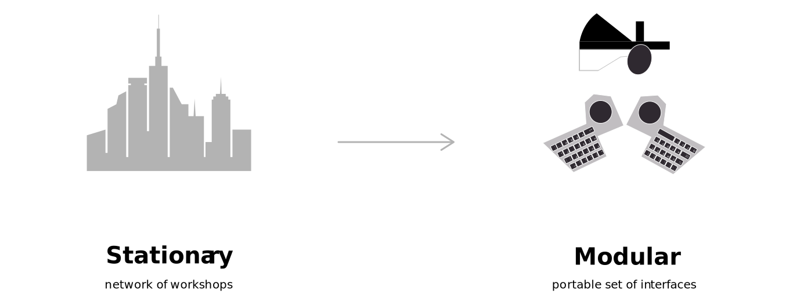
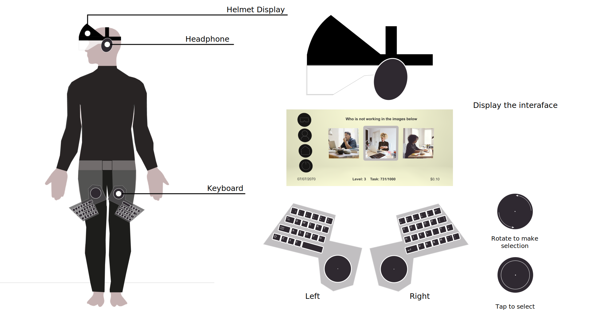

The near future is dominated by an ubiquitous AI: The ONE that is governing all processes of human life. In this new world, humans don't pursue ordinary professions anymore, but rather contribute their human brain power and analytic capabilities to constantly improve the AI.
The ONE outsources small virtual microtask to its army of crowd-workers, who then perform them for a monetary remuneration. These tasks vary widely in scope and substance, but what links them all is that they’re essentially too difficult or too dependent on human analysis for computers to do.
"We are proposing a set of physical interface called BitGear_ that manages transactions of labour in order to speculate on thefuture of labour and the influence of AI on our daily lives, our skill stack and creativity".
What kinds of skills will the AI value most?
How will it be delivered?
Where is the work performed? and why?
At first we want to create a stationary workspace for the crowd-workers. Since we think our speculative scenario is relative a dark future of AI. So thought create a stationary workspace is suitable for create a rigid and sturdy feeling for those crowd-works. However, since we also think about that crow-workders are supposed to make living by finish these micro-tasks. And because of only the low skill required by these tasks. The pay can be very low. It can be $0.1 per task. So we assume the crow-workers in this future should pursue for the efficiency of finish these tasks. In this way, we shifted our idea of work in a stationary workspace to a modular set of interfaces, which is able to help the crowd-works work anytime, anywhere
BIT_GEAR is a set of physical interfaces for crowd-workers that consists of a casque for audio and video processing as well as two wearable keyboards. BIT_GEAR shall enable crowd-workers to work from anywhere at anytime, to access and complete microtasks, and to share their labour with the The ONE.
